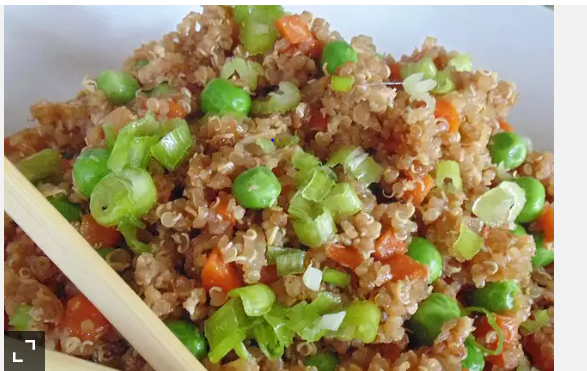

Fried Rice

- prep 15min
- cook 30min
- Serving 6
Ingredients
- 1 ½ cups water
- 1 cup quinoa
- salt to taste
Sause
- 2 ½ tablespoons soy sauce
- 1 ½ tablespoons teriyaki sauce
- ¾ teaspoon sesame oil
Directions
Step 1
Bring water and quinoa to a boil in a saucepan; season with salt. Reduce heat to medium-low, cover, and simmer until quinoa is tender and water has been absorbed, 15 to 20 minutes. Remove saucepan from heat and let sit for 5 minutes; fluff quinoa with a fork. Refrigerate until cool, 8 hours to overnight.